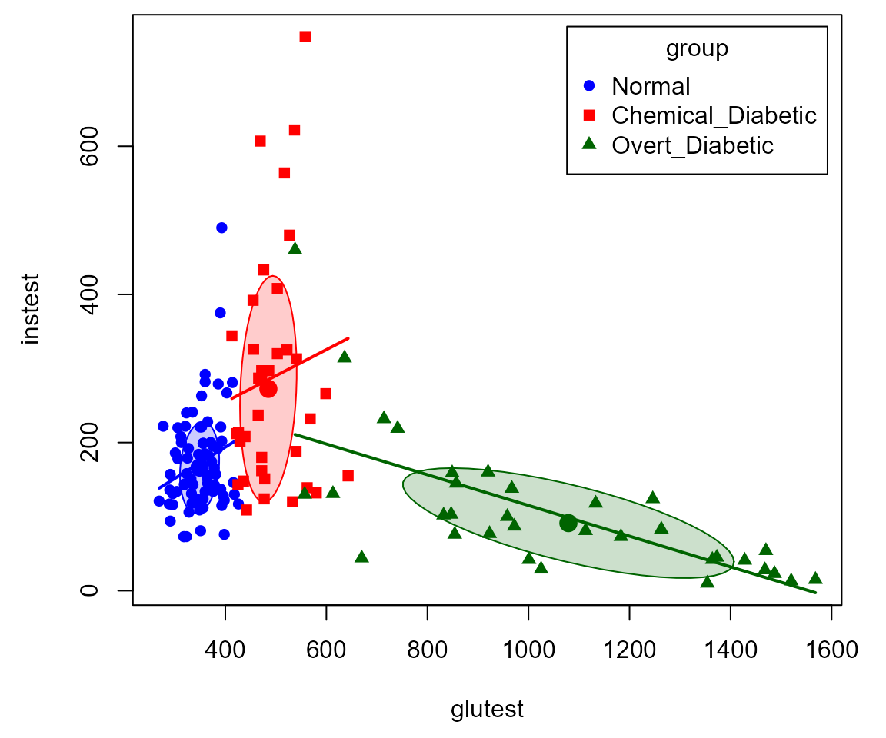
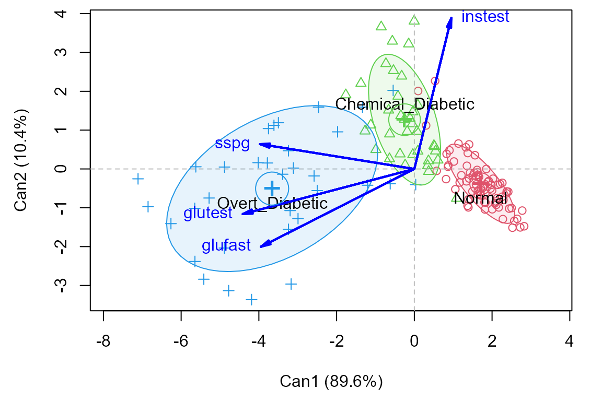

Diabetes data: heplots and candisc examples
Michael Friendly
2025-11-21
Source:vignettes/diabetes.Rmd
diabetes.RmdVignette built using heplots, version 1.7.9,
candisc, version 1.1.0 and car, version
3.1-3.
Background
Reaven and Miller (1979) examined the relationship among blood chemistry measures of glucose tolerance and insulin in 145 nonobese adults. They used the PRIM9 system at the Stanford Linear Accelerator Center to visualize the data in 3D, and discovered a peculiar pattern that looked like a large blob with two wings in different directions.
After further analysis, the subjects were classified as sub-clinical (chemical) diabetics, overt diabetics and normals. This study was influential in defining the stages of development of Type 2 diabetes. Overt diabetes is the most advanced stage, characterized by elevated fasting blood glucose concentration and classical symptoms. Preceding overt diabetes is the latent or chemical diabetic stage, with no symptoms of diabetes but demonstrable abnormality of oral or intravenous glucose tolerance.
The Diabetes data set is contained in the
heplots package. This vignette uses these data to
illustrate various graphical methods for multivariate linear models. As
we’ll see, the data is peculiar in several respects and a standard
MANOVA is problematic because some assumptions are violated. We treat
this as a learning opportunity, because it allows us to illustrate
several diagnostic plots. Some of the content here serves as an
additional example for a recent paper on visualizing tests for equality
of variance in MANOVA (Friendly & Sigal, 2017).
Setting up
Load the required packages and the data
data(Diabetes, package="heplots")
str(Diabetes)
## 'data.frame': 145 obs. of 6 variables:
## $ relwt : num 0.81 0.95 0.94 1.04 1 0.76 0.91 1.1 0.99 0.78 ...
## $ glufast: int 80 97 105 90 90 86 100 85 97 97 ...
## $ glutest: int 356 289 319 356 323 381 350 301 379 296 ...
## $ instest: int 124 117 143 199 240 157 221 186 142 131 ...
## $ sspg : int 55 76 105 108 143 165 119 105 98 94 ...
## $ group : Factor w/ 3 levels "Normal","Chemical_Diabetic",..: 1 1 1 1 1 1 1 1 1 1 ...The variables are:
-
relwt: relative weight, expressed as the ratio of actual weight to expected weight, given the person’s height -
glufast: fasting plasma glucose level -
glutest: test plasma glucose level, a measure of glucose intolerance, -
instest: plasma insulin during test, a measure of insulin response to oral glucose, -
sspg: steady state plasma glucose, a measure of insulin resistance -
group: diagnostic group
relwt is not used in this example, but that is not for
any principled reason.
Data ellipsoids and homogeneity of variance
We start by plotting covariance ellipses for three of the variables
in the data set. heplots::covEllipses() is similar to
dataEllipse() in the car package, but tuned to
plots designed to assess homogeneity of covariance matrices in MANOVA
designs. It produces a scatterplot matrix of these when the
variables argument is of length > 2.
covEllipses(Diabetes[,2:5], Diabetes$group,
variables=1:3,
fill=TRUE, fill.alpha = 0.2,
pooled=FALSE,
col=c("blue", "red", "darkgreen")
)
Plot matrix of data ellipses for diagnostic groups in three main
variables of interest in the Diabetes dataset.
It is clear from this that there is a problem of heterogeneity of variance-covariance matrices here. The normal group shows the smallest variances and the overt diabetic group the largest.
As well, the plot suggests something more interesting about the
difference between the overt and chemical diabetes groups. In the panel
for glufast and glutest, there appears to be a
direct progression from normal to chemical to overt. However, this is
not true in the other panels, where the chemical diabetes group differs
from the normals in one direction, while the overt group differs in a
different direction and has a within-group correlation opposite in sign
to the others.
This can be seen more easily in individual scatterplots, such as that
below (using car::scatterplot).
scatterplot( instest ~ glutest | group, data=Diabetes,
pch=c(16,15,17),
col=c("blue", "red", "darkgreen"),
smooth=FALSE,
grid=FALSE,
legend=list(coords="topright"),
lwd=2,
ellipse=list(levels=0.5))
This insight was part of the reason that Reaven and Miller concluded that chemical diabetes and overt diabetes reflected different disease regimes, rather than an increasing progression of severity.
As an aside, we note that the differences among the groups can be
readily seen in 3D using car::scatter3d(). In an R console,
the plot can be zoomed and rotated manually or under rgl
controls.
scatter3d(sspg ~ glutest + instest | group, data=Diabetes,
surface=FALSE, sphere.size=1.5, ellipsoid=TRUE,
surface.col=c("blue", "red", "darkgreen"))Box’s M test
Box’s M test confirms that there is substantial heterogeneity of
covariance matrices. The plot method for the result gives a
convenient and informative display of how the groups differ in the
components
()
that go into Box’s M test.
diab.boxm <- boxM(Diabetes[,2:5], Diabetes$group)
diab.boxm
##
## Box's M-test for Homogeneity of Covariance Matrices
##
## data: Diabetes[, 2:5]
## Chi-Sq (approx.) = 383, df = 20, p-value <2e-16
op <- par(mar=c(4,6,1,1)+.5)
plot(diab.boxm, cex.lab=1.5)The log determinants are ordered according to the sizes of the data ellipses we saw in the covariance ellipse plots.
Fit the MLM
We ignore this problem for the sake of this example, and proceed to fit the MANOVA model for the mean differences among groups.
The MANOVA shows a highly significant effect of group on
the collection of response variables.
diab.mlm <- lm(cbind(glufast, glutest, instest, sspg) ~ group, data=Diabetes)
Anova(diab.mlm)
##
## Type II MANOVA Tests: Pillai test statistic
## Df test stat approx F num Df den Df Pr(>F)
## group 2 1.18 50.1 8 280 <2e-16 ***
## ---
## Signif. codes: 0 '***' 0.001 '**' 0.01 '*' 0.05 '.' 0.1 ' ' 1Examine residuals in a QQ plot
Another assumption of MANOVA is that the residuals have a
multivariate normal distribution. This can be assessed visually with a
Chi-square QQ plot. This plots squared Mahalanobis distances
()
of the residuals vs. corresponding quantiles of the
distribution with
degrees of freedom. The cqplot function in the
heplots package is designed to do this from a fitted MLM
object. A confidence envelope makes it easy to see when the departure is
large enough to cause concern.
It can be seen here that the points differ substantially from the red line of equality. There are far too many points with large values.
cqplot(diab.mlm, id.n = 3)HE plots
An HE plot shows the ellipse for differences among means together with the ellipse for error. In the default scaling, such plots have the visual property that a given effect in the MLM is significant (by Roy’s maximum root test) iff the ellipse projects anywhere outside the ellipse.
By default, the first two response variables are plotted. The result
shows that the means on both glufast and
glutest are ordered
Normal < Chemical < Overt.
heplot(diab.mlm, fill=TRUE, fill.alpha=0.1)The pairs method for an MLM gives a scatterplot matrix
of HE plots for all pairs of response variables. The pattern for
instest seems to differ from the other variables.
pairs(diab.mlm, fill=TRUE, fill.alpha=0.1)Canonical discriminant analysis
Canonical discriminant analysis effectively projects the data into the space of linear combinations of the responses that accounts for the greatest proportion of the between-group variance relative to within-group variance.
In this case, with groups, this space is two-dimensional, so all differences can be seen in a 2D plot. From the output below, nearly 90% of between-group mean differences are accounted for by the first canonical dimension. Both canonical dimensions are significant, by a likelihood ratio stepdown test.
diab.can <- candisc(diab.mlm)
diab.can
##
## Canonical Discriminant Analysis for group:
##
## CanRsq Eigenvalue Difference Percent Cumulative
## 1 0.824 4.689 4.14 89.6 89.6
## 2 0.353 0.546 4.14 10.4 100.0
##
## Test of H0: The canonical correlations in the
## current row and all that follow are zero
##
## LR test stat approx F numDF denDF Pr(> F)
## 1 0.114 68.3 8 278 < 2e-16 ***
## 2 0.647 25.5 3 140 3.3e-13 ***
## ---
## Signif. codes: 0 '***' 0.001 '**' 0.01 '*' 0.05 '.' 0.1 ' ' 1Canonical discriminant plot
The plot method for a candisc object plots
the scores on the canonical dimensions and overlays 60% data ellipses
for each group. The positions of the group means show the the means on
the canonical dimensions.
The relationship of the response variables to the canonical dimensions is shown by vectors (similar to a biplot). Each vector is defined by the correlations (structure coefficients) it has with the canonical dimensions.1
plot(diab.can, ellipse=TRUE, var.lwd=2)
In this plot it can be seen that:
Dimension 1 is highly related to
glufast,glutestandsspg, and the groups are orderedNormal < Chemical < Overt.Dimension 2 distinguishes the
Chemical_Diabeticgroup from the other two. This dimension is largely related toinstest, the plasma insulin during test. This confirms what we saw in the HE plot matrix for all the responses.The relative sizes of the data ellipses for the canonical scores is another visual indication of the lack of heterogeneity of variances.
Canonical HE plot
The heplot method for candisc objects gives
an HE plot summary of the canonical discriminant analysis. The variable
vectors are the same as in the canonical structure plot. The size of the
ellipse relative to that of the
ellipse is an indication of the magnitude of the multivariate effect for
group.

## Vector scale factor set to 12.06Other analyses
There are other methods that could be used to analyze these data and display the results visually. We merely sketch some alternatives here.
Linear and quadratic discriminant analysis
Linear discriminant analysis (LDA) is similar in spirit to MANOVA, but the emphasis is on classification rather than on testing differences among means. As well, LDA allows specification of the prior probabilities of group membership to make classification error rates comparable to what would be obtained in a population of interest. Quadratic discriminant analysis allows for differences in the covariance matrices among groups, and gives quadratic rather then linear classification boundaries.
LDA is in some sense equivalent to our canonical discriminant
analysis. A simple function for this is lda in the
MASS package. This gives the same class means and the same
variance proportions as candisc. However, here, the prior
probabilities are taken from the proportions of the groups in the
data.
library(MASS)
diab.lda <- lda(group ~ glufast + glutest + instest + sspg, data = Diabetes)
diab.lda
## Call:
## lda(group ~ glufast + glutest + instest + sspg, data = Diabetes)
##
## Prior probabilities of groups:
## Normal Chemical_Diabetic Overt_Diabetic
## 0.5241 0.2483 0.2276
##
## Group means:
## glufast glutest instest sspg
## Normal 91.18 350.0 172.6 114.0
## Chemical_Diabetic 99.31 493.9 288.0 209.0
## Overt_Diabetic 217.67 1043.8 106.0 318.9
##
## Coefficients of linear discriminants:
## LD1 LD2
## glufast 0.0326457 -0.038928
## glutest -0.0119958 0.006560
## instest 0.0003149 0.006202
## sspg -0.0056269 0.003231
##
## Proportion of trace:
## LD1 LD2
## 0.8958 0.1042From the LDA perspective, one goal in visualizing the results is to
see the boundaries of classification based on the LD1 and
LD2 scores. The plot shown here was produced with
ggplot2, following a method described in this
stackoverflow question. What is missing here is any indication of
how this relates to the response variables.
Quadratic discriminant analysis can be carried out in a similar way,
using the qda function. The results are not shown.
Recursive partitioning
Recursive partitioning is a method that creates a decision tree designed to classify the members of a population. It recursively splits the data into sub-populations using dichotomous intervals of the predictors. One strength of the method is that it is nicely tied to cross-validation, where a sample is repeatedly split into training and test samples, and the model fit to each training sample is assessed on the test sample.
For the diabetes data, the result is very simple: A value of
glutest < 420 distinguishes normals from the two
clinical groups. For the latter, glufast < 117
classifies an individual as chemical diabetic rather than overt
diabetic.
library(rpart)
diab.part <- rpart(group ~ glufast + glutest + instest + sspg, data=Diabetes)
diab.part
## n= 145
##
## node), split, n, loss, yval, (yprob)
## * denotes terminal node
##
## 1) root 145 69 Normal (0.52414 0.24828 0.22759)
## 2) glutest< 420.5 76 1 Normal (0.98684 0.01316 0.00000) *
## 3) glutest>=420.5 69 34 Chemical_Diabetic (0.01449 0.50725 0.47826)
## 6) glufast< 117 36 1 Chemical_Diabetic (0.02778 0.97222 0.00000) *
## 7) glufast>=117 33 0 Overt_Diabetic (0.00000 0.00000 1.00000) *A nice plot of the partition tree is produced using the
rpart.plot package. The numbers in the nodes give the
proportions classified in each of the three groups.
library(rpart.plot)
rpart.plot(diab.part, box.palette=list("Blues", "Reds", "Greens"))How well does that do? We can examine a table of predicted group membership vs. actual and calculate the error rate. Not too bad!